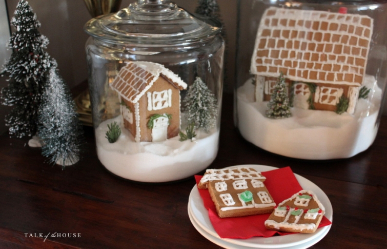

.png)
.PNG)
.PNG)
.PNG)
.PNG)
.PNG)
.JPG)
.JPG)
.PNG)
.PNG)


The kitchen isn’t the only room in our house with gingerbread houses for Christmas. Â They are back in the dining room too standing in their jars of sugar “snow.”
I was inspired by the house cookie cutters at Jenny Steffens Hobick’s blog. (She had to restock them 4 times this season!) I never got an order in before they were sold out each time, so I tried to make a few house cookies by just cutting them out with a knife around a hand drawn house…not nearly as good as the actual cutters, but not terribly bad either.
.jpg) Decorated gingerbread men (bought un-decorated from Fresh Market) are once again in a jar on the dining room cabinet shelf.
Decorated gingerbread men (bought un-decorated from Fresh Market) are once again in a jar on the dining room cabinet shelf.

Another jar simply has bottle brush trees standing in the sugar “snow.”
And now to the table.
Several people asked about the dishes when they saw them in the recent Christmas in the Kitchen post.  I bought them all on Ebay a few years ago.  They are a Williams Sonoma pattern from 2010 called Christmas Icons.  I actually thought about selling all of the pieces this year and buying the Spode Christmas Tree pattern again. We had it years ago when the children were very young.  I tried out a few pieces of it on the table when I was contemplating going with a red and green color scheme. (My mother in law must own every piece they have ever made!)  In the end, I liked the WS pattern better, so it’s staying. 🙂
Another gingerbread house is part of the centerpiece. Â I store the ones in the jars in the cabinet (with plastic wrap under the lids) during the year, but the ones on the cake stands go in extra large ziplock bags and then into the freezer.
They normally last very well, but the one in the kitchen must have had an earthquake today.  I came in this morning to find half of its roof fallen off!  (It was easily repaired with hot glue though. 🙂 ) I’ll keep my fingers crossed this one doesn’t meet the same fate.
Remember I said I decided to go with a red and black color scheme this season? Â (And not a red and green one.) Â The whole decorating world seems to be plaid and check crazy these days, and I told myself I was NOT going to use any plaids or checks for Christmas. (Truly!) You see how long that lasted, right? Â Those black and white checked napkins just looked too good with the red dinnerware to not use them. So…Â I eat my words.
And the red check egg cups came out of the cabinet as well.
(I need 2 more if any of you know of a source.)
It’s an addiction folks.
 Those egg cups worked perfectly for holding the little bottle brush trees.
I just cut out a circle of florist’s oasis foam and pushed it into the egg cup, sprinkled more sugar “snow” on top of it to cover up the green, pulled the base off the tree, and then stood the tree in the foam. Easy peasy.
They would make wonderful place card holders. Â I started to tie small ring tags with everyone’s names on them around the base of the trees, but then I decided the table was “busy” enough without them….maybe next year…or perhaps when we have a large crowd at the table.
I always feel like the dining room is the most “Christmas-y” room in the house, so it is fun to decorate for the season.  I helped my mom with her dining room today, and it is coming along very nicely…much more formal than mine because she has fine Christmas china, and it’s a separate formal dining room.  A couple more floral arrangements and we can call it finished.  She can leave her table set up because it is a separate room, but our table is the only one at which we eat. That makes for a problem if I want to leave it set between meals. If you have Christmas china, do you leave your table set through the season, or do you just set it at meal time?  I’d love to know, so please talk about how you handle it in the comments below. 🙂
Thanks so much for your input!


.PNG)
Every time I see what you’ve done I get a pang of jealousy! How can one person have so many great ideas and the energy to actually do them?? Lol! Love the black gingham napkins! They are perfect with your dishes! I had planned on making gingerbread houses this year but sadly time has run out! Maybe next year? Merry Christmas!🎄
All the red, so festive! And, as always, I love your special, personal touches that create such a warm and inviting home for the holidays. Merry Christmas to you and your family, Kelly.
I’m late to the party due to chaos all around, and family in for the holidays, but just wanted to say how I love your dining room look! (And enjoyed your outdoor decorations post too!)
I have never left the table set, because hubs uses it as a drop station!
I once constructed a two story Victorian “cookie” house I found in Good Housekeeping. Cookies were applied on a cardboard framework. It took me three weeks to assemble, with little girls underfoot! I ended up spraying it with clear sealer and storing it in the basement. It lasted about 5 Christmases, but then the cookies started to drop off. My oldest daughter just mentioned it this year, so maybe next year I’ll make a smaller one to give her as a gift! If she’s good, that is! 😉
Hi Kelly! I’m completely in love with your gingerbread houses in a jar. Brilliant! I’m going to try it myself too. Merry Christmas to you and your family!
You are just too creative! Those trees look cute everywhere you put them, especially in those cups. I wish I could scale down from how much stuff I put out, but I just can’t seem to do that. I like your black and white checked napkins. I have Lenox Holiday china. I don’t leave it on the table but I do leave it on display in my china cabinet all year long.
Years ago I use to make little gingerbread houses from graham crackers. They were fun to make, but time consuming. I recently was in a local bakery that sells gingerbread houses in two sizes. I was tempted to treat myself to the small one for $17. They were beautiful and really quite decked out, but I held back. 🙠I love your egg cup tree décor. Cute idea. I have on my kitchen table two small cake stands with glass domes. In one I have cute Crate and barrel porcelain elf ornaments and mini tree with fake snow and the other mini viintage tree, deer and little Target house. Whimsical. I don’t usually set a table until that morning. I am always taking things down to the wire…. 🙠I always feel that when Christmas comes, I need another week just to sit back and really enjoy the holiday. Ugh…so much to do…
The little trees are so cute in the egg cups! Another gorgeous holiday themed room. I’m not using plaid this year. I don’t happen to have any. But I’m not real crazy about plaid. It’s checks that I love!
Brenda
I love your gingerbread houses and bottle brush trees in the jars! I will be copying you next year! And, your dining table looks beautiful!
We have a separate dining room and I put out a variety of Christmas dessert dish set that I’ve gotten over the years from Williams-Sonoma and Pottery Barn. I also put out some cookie plates and eventually fill them with cookies and cover them with plastic wrap. A few days before Christmas I remove those plates and set the table for dinner on Christmas day. We use the dessert plates after dinner when friends drop by for a dessert buffet. I use a combination of Spode Christmas Tree china and my Lenox that I’ve had since I was married. I love setting a pretty table for the holidays and all the special occasions throughout the year.
Have a very Merry Christmas, Kelly!
Your table is gorgeous Kelly. I think those dishes look lovely in your home. I have a separate dining room so I keep my table set. My pattern is the Spode Christmas Tree….loved it many years ago and love it just as much now. I would enjoy seeing your Moms table!! This season goes by so fast. Thanks for sharing!!!
How incredibly smart to freeze the gingerbread houses! Great idea. I just love your house – it is the most welcoming and warm house on the web. I love the dishes and am happy you are keeping them. Also, were did you find the black and white napkins please?
———————————————————————
Thank you so much Talia! What a super nice compliment!
The black and white napkins came from Sur la Table a couple of years ago. I don’t know if they still carry them.
Happy new year to you!
Kelly
I love everything. I have to say ditto to all the other comments! Checked napkins are so cute with the Christmas plates; gingerbread houses are adorable;and your table is so inviting.
Thanks for sharing the warmth of your home at Christmas time.
Anne
Kelly,
How clever to freeze the gingerbread houses. I thought you made a new one for each space each year. I was really impressed considering all that goes on at Christmas. Where do you find the bottle brush Christmas trees?
Love the way the dining room looks, so festive and fun.
xo,
Karen
———————————————————————-
I would have loved to have made new ones each year, but I am too slow to do that. It takes me quite a while to decorate and assemble one. I am thankful they will freeze! Our bottle brush trees all came from Walmart. I have to buy them as soon as they put them out because they go fast around here!
Kelly
Your dining room is lovely!! I really like the red/black/white scheme you’ve got going on – those checked napkins are so cute with those Christmas plates!!
Merry Christmas! Love your ideas and all the red 🙂 My favorite accent color, and I probably go a bit overboard with it at Christmas lol The gingerbread houses and the bottle trees in the glass jars are my favorite takeaway idea as are your gorgeous wreaths throughout the house!
We have a separate dining room which I decorate from the chandelier to the mirror to the table! My table is a 55″ square, so I place a red oblong cloth first and then and oval deep green plaid with gold threads shot through – looks super. My dishes are Waechtersbach red Christmas Tree. My dad gave every piece to my mom beginning in the 1970s, and I have used them ever since my mom passed them on to me. Now that she is living with me, she is enjoying them all over again. Good memories! They really brighten up the table and go with everything. Thanks for all the wonderful decorating ideas, Kelly – so cozy, festive and full of Christmas cheer!
Until our last move, I always decorated my dining table with my collected ‘stuff’ from many Christmases. Sadly, in our latest home, the dining room table is used every day (no door to close) and my cat would have a hey-day un-decorating it, so no place settings this year. Funny note: years ago, on some day-time t.v. talk show, the ‘decorator’ was poo-pooing those of us who adorn our dining room tables for Holidays – with place settings, stemware, etc. His comment was to the effect that unless we were having a photo shoot of our house, this was so ‘kitschy.’ Ha. I’d say he’s in the who-cares-you-are-an-expert group on this one. Love your gingerbread theme, etc.. Take that Mr. Decorator!
I love the gingerbread houses in the glass jars. I bought a gingerbread house cookie cutter a few years ago in a Christmas shop in Pigeon Forge, TN. I love Jenny’s though. Hopefully, you can buy it off season. The black checked napkins look great with your dishes. I used to put Christmas dishes (Fitz and Floyd St. Nicholas that my husband bought at a great price from someone 🙂 ) in my hutch, but my style has changed a bit so I just have white dishes now. I usually set my table with white dishes. Your table looks so festive and I’m sure you enjoy seeing your dishes every time you see them!! 🙂
A friend & I made gingerbread houses several years ago. I stored mine in the basement. She put hers in the attic. When she went up to the attic a few months later she saw that the heat had melted the frosting & candy. She took it downstairs & called to tell me that it tasted just as good as it had when we had made them after a minute or two in the microwave!
Your post made me want to do it again. So many happy memories! So much fun!
I love the “checks” all over your house—-had them in my last house & am thinking of redoing my bedroom at our house in the mountains just because I miss them.
You should share your Mom’s table for Christmas! I am sure it is lovely! Your’s is gorgeous and thank you for sharing! I am loving the checks as well! Marry Christmas!
WOW…. good thing you retired!!! 🙂 … You are one busy beaver… and everything is gorgeous!!!!! Love the wreaths with the red ribbons!!! Never… ever get tired of those!!!! and of course those beautiful gingerbread houses in the jars!!!!! Merry Christmas !!!!
I LOVE your WS Christmas china. I think you made a great choice going with it instead of Spode Christmas tree. Your house is beautiful! I recently stumbled onto your blog and I love it. So much inspiration!
I love the black and white napkins! And I have several egg cups but never really thought of using them in another way. Now I know what I will do with my egg cups at Easter!!
I too love the gingerbread houses in the glass jars! I told my kids ( all adults) that we should have a gingerbread house contest. Get creative. Well, I think we would eat our little houses. But it’s a fun display idea putting them in jars to enjoy for a bit. Thanks for sharing!!!
Kelly,
Your house always looks so nice regardless of the time of year.
MERRY CHRISTMAS AND A HEALTHY NEW YEAR!
Love your Christmas table….. I have a separate dining room, so I leave my table in there set for the season and we eat our everyday meals at the table in the eat-in kitchen. I don’t have “formal” Christmas china, but do have several different Christmas dishes that I like to switch out on the table, as well as use for everyday meals. Thanks for sharing your home and decorations with us….Merry Christmas!
Our table is set on Christmas Eve. Mainly because after an early evening walk and meeting up for some mulled wine etc out in town by the river we go home and play board games at the table! At other times it’s set with a festive runner, centre piece, candles etc. I don’t have a special Christmas Dinner set but as the ones I use are either white or cream with black ….(plain no patterns) I coordinate them with specific Christmas pieces which somehow works! 🙂 like everyone here I love your gingerbread houses …and the idea you have room in the freezer to keep them! Also the trees in the egg cups are so cute … and using sugar for snow. Once again, you’ve inspired me to look at how I decorate for Christmas and try new things! I love having a small tree in my kitchen area ……makes me smile and feel happy when feeling hot and flustered baking etc 🙂
I think it’s important we all take time to enjoy these weeks before Christmas otherwise it feels like it’s over too quickly! I can imagine you and your mum having a lovely time together . Take care,
Rosemary
I do have formal china but not in a christmas pattern. We have a living room and dining room combination room. This summer we sold our dining room furniture and have turned the area into a practical study space which we absolutely love. In our kitchen, we have a very long farmhouse table and find this space sufficient. I would to have Christmas dinnerware. I should look into that! I really like the quality of Spode and Williams Sonoma . Your table setting is beautiful and inviting! Never thought of using sugar snow for your trees. Brilliant idea!
As always your decorations amaze me. I love it all!!!
I do have a Christmas china and a formal dining room. The china is not your typical Christmas china, but it is a separate pattern from my china. It is silver trimmed with pinecones and looks Christmasy because of the pinecone pattern. We have a tradition of using it on Christmas Eve, and everyone looks forward to it. I don’t leave it decorated for the whole season. I think it would drive me nutty. I like the clean look of the table. I do have the napkins already and sitting on the shelf of the buffet. We do use our formal dining room a few times a year, but mostly in the cold months. We eat outside or in the kitchen during the other months since we live on the Gulf Coast. Really other than Christmas, we are a very casual family.
Everything looks so festive and cozy , right down to the repaired roof! I still love those dishes! Boy, I am glad you did not sell them, especially without telling me you were going to. I do set my dining table. I love it. It is a lot of trouble to take the dishes up and replace the tablecloth with a different one when we have dinner guests, but I am used to it. I really don’t mind. I do keep my kitchen table set with chargers and Christmas dishes. We still use it every day. It’s just become part of our Christmas ritual. Love your gingerbread houses. Sugar snow. You’re so smart! Thank you for sharing. Love the black paired with the red too!
Sherry
I love your gingerbread houses in the glass jars! They’re magical and appeal to the child in all of us. You inspired me to create scenes with little snowmen and trees inside similar glass jars. They make me smile every time I look at them. Instead of sugar, I use epsom salt for “snow”. When the Christmas decorations come down, I pour the epsom salt into large zip-lock bags and save it for the next year.
In answer to your question regarding table settings, I keep a decorative centerpiece in the middle of the table, but I don’t leave place settings between meals. Just a personal preference.
Wishing you and your family a blessed Christmas and a happy, healthy New Year!
I love your gingerbread house display in the glass jars. You had my dying with “They normally last very well, but the one in the kitchen must have had an earthquake today. I came in this morning to find half of its roof fallen off!” 🙂 I am also a loyal Jenny Steffens Hobick blog reader (that’s how I found you on last year’s Christmas in the Kitchen!) and have been eyeballing the cookie cutters. You did such a great job using a knife with your version! I actually just bought the Spode Christmas Tree plates at Homegoods this season 🙂 Merry Christmas, Kelly!
Love those napkins! Completely smitten with those bottle brush trees in those sweet egg cups. And those Gingerbread houses are adorable! I think your dining area is always so cozy and cute. I set my table at meal times. Our little farm kitchen includes our only dining area and gives new meaning to the word cozy.🙂
They look like Marieke At Home Sarah Red Egg Cups.Not sure where you can find them anymore.
I have a gingham addiction as well 😉
I set my Christmas place settings up as needed. We don’t have a formal dining room so our kitchen table has to do double duty. We usually eat at the bar during the week and only make it to the table on weekends or when we entertain. We are a casual sort of bunch. When it is Christmas time I move my dishes out of storage and put them in the upstairs garage. They sit in there respective tubs until I need certain pieces and then I get them out use them, wash them and then store them back in the tubs. It has worked so far. Thanks for sharing how you do it. Take care.
Your gingerbread houses are amazing! Love the ones in the jars – so clever and your table looks perfect…definitely ready for Christmas at your house!
I take it you made the gingerbread houßes? I hoped they were for sale someplace to purchase. Not sure I am talented to make them!
Our family has separate dining room. We eat all over home and dining area is set daily. I like setting with different look – may eat fireside, on the veranda, dining, or even kitchen. Depends on meal, weather, etc.
Enjoying your frequent post.
The napkins really go well with dishes and the gingerbread houses are the perfect touch! I think it is so sweet that you help your mom set her table. She is blessed to have you as a daughter! 🙂 I usually have my table set by now but I’ve had too much going on ( new laundry room in motion– washer died) but when I do set it I leave it and we eat in family room on our antique oak table ( can’t get a square meal there– my sweet MIL used to say when it was hers!) I usually change the table decorations every year. I mix 2 Christmas tree stoneware patterns or my mom’s holly berry china. Will your children be home soon or right before? Finals over? Still too warm here in FL!! Nice for my Christmas plants outside though— blessings to you Kelly!!
Oh so pretty and I too love the pretty gingerbread houses.
I just love seeing your gingerbread houses – especially in the glass jars. In fact, you inspired me to buy some jars this year and I had my son put a little snow scene in one. We had so much fun doing it. Your dining room looks so cozy and ready for guests. Love how you have your table decorated!
Shelley
I’m so glad there’s another girl out there who is in love with red! Merry Christmas to you and yours with best wishes for a wonderful 2016!
I have a separate dining room and I have beautiful crystal and china. But I don’t set the table before Christmas Eve day because my dining room table also serves as a wrapping station and craft table! I need to find a better place to do those things! I love your decorations!
Well, what a brain storm you’ve given me! I have always loved your giant jars full of magnificent things! They make anything you place inside appear magical.
I’m also happy you suggested yankin’ the bases off the bottle brush trees, because mine never stand straight and flop over, so it would make more sense to poke them down into some foam.